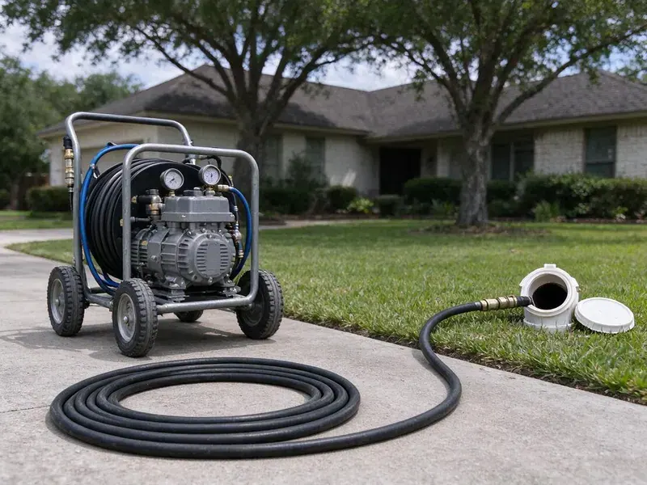

Hydro Jetting in Youngstown, OH
Years of grease and scale in Youngstown, OH pipes come out with high-pressure water, no chemicals needed.
- Residential and Commercial Units
- Pipe-Safe Pressure Settings
- Up to 4,000 PSI
- Removes Heavy Buildup
Same Clog Again? Schedule Hydro Jetting in Youngstown, OH
Grease line clogging every few months? Call (740) 449-7505 and we will scour it back to full size.
High-Pressure Hydro Jetting in Youngstown, OH That Cleans the Whole Pipe
HRL Plumbing jets drain and sewer lines that keep clogging. A cable opens them, a jetter cleans them. High-pressure water scours off the grease, scale and roots that build up in older lines, which a cable simply cuts a path through.
Some of what we do:
- Jetting for 1-1/2 inch to 6 inch lines
- Full-flow cleaning for home and commercial pipe
- Scheduled maintenance jetting for restaurants

Additional Drain Services Services in Youngstown, OH
From stubborn kitchen clogs to main sewer backups, our drain services in Youngstown, OH clear the line and keep it clear with camera-verified results.


Customers
Why Choose HRL Plumbing for Hydro Jetting in Youngstown, OH?
Snaking restores some flow. Jetting brings back full diameter. A pipe cleaned back to full size handles normal use without clogging, and that saves money on repeat visits.
- Water Only, Nothing but water goes into the pipe, so there are no harsh chemicals to damage older lines.
- Maintenance Plans, Scheduled jetting keeps buildup from reaching the point of a backup.
- Full-Wall Cleaning, Jetting scrubs the pipe circumference instead of leaving a narrow channel through the clog.
Citywide Coverage
Every neighborhood in Youngstown gets jetting service from HRL Plumbing. Old districts and new ones. From older areas with cast iron and clay to newer developments with PVC, we bring the right jetter and nozzle for the pipe under each home.
Experienced Team
Our jetting techs train on the equipment before running calls. They learn safe operation first. They understand how different pipe materials and blockage types common in local homes react to high-pressure water, and they adjust accordingly.
Safety-First Approach
Our jetters are inspected regularly. Hoses get checked often. We take every precaution, including a camera inspection before jetting and regular checks of hoses, nozzles and fittings, to prevent damage to your plumbing.
Trusted Certified Youngstown Plumbing Services Professionals
At HRL Plumbing, we are proud to offer certified plumbing services throughout Youngstown, OH. Those papers on the wall mean something. Our plumbers hold recognized industry credentials, and they follow strict safety and quality rules on every repair, installation and maintenance call we run.
Call Us Now PHCC Plumbing Contractor Recognition
PHCC Plumbing Contractor Recognition Better Business Bureau (BBB) Accreditation
Better Business Bureau (BBB) Accreditation Angi Certified Pro
Angi Certified Pro ISO 9001 Quality Management Certification
ISO 9001 Quality Management CertificationHigh-Pressure Jetting Jobs in Youngstown, OH
Main Sewer Line Hydro Jetting in Youngstown
Every drain in the house empties into the main. One blockage, every fixture. Mains are often hit by roots from large trees planted near the line, and jetting cuts and flushes those roots while clearing the built-up waste around them all the way to the city sewer.

Hydro Jetting for Hard Water Scale in Youngstown
Much of Ohio has hard water, which leaves scale in water heaters, clogs aerators and cuts the life of appliances. Scale traps debris. Rough pipe catches more waste. Jetting breaks down and flushes out hard mineral deposits, restoring the full diameter of the pipe, and it works much better than chemical descalers that can also damage older pipe.
Residential Sewer Line Jetting in Youngstown
Most home mains are 3 or 4 inches. They collect a lot. The hose goes in at the cleanout and moves toward the street, while the nozzle scrubs the walls and breaks up any blockage, and a camera run afterward shows the pipe clean.
Commercial Hydro Jetting in Youngstown, OH
Commercial pipe sees heavy loads. Restaurants pour grease daily. Our commercial jetting handles larger and longer lines with more flow, clearing heavily packed laterals and keeping you clear of health code trouble and an unplanned shutdown during a busy week.
Residential Hydro Jetting in Youngstown
Household lines collect a mix of buildup. Grease, hair, soap and detergent. We use nozzles and pressure settings that fit everything from a 1-1/2 inch kitchen line to a 4 inch main, so the jet cleans the pipe without blowing back into a fixture.
Emergency Hydro Jetting Services in Youngstown, OH
A full sewer backup needs fast help. We bring the jetter to you. The emergency crew arrives with jetting equipment and a camera, clears the blockage and restores flow, so water stops coming up through the lowest drain and the damage stops spreading.
Hydro Jetting Cost Compared to Snaking in Youngstown, OH
Jetting costs more on the first visit. The results hold up better. If you are paying for snaking several times a year, jetting often costs less over time because it removes the coating that causes the repeat clogs in the first place, though a simple soft clog may only need a cable.

Kitchen Line Grease Jetting in Youngstown, OH
Grease clings and hardens. Lines under a slab get it bad. We use smaller hose and nozzles for kitchen branches, which scrub the grease off the walls rather than tunneling through it, so your sink and dishwasher drain properly for much longer.
Local Hydro Jetting Near Me in Youngstown, OH
A good local jetting company shows up with the right gear. We carry cart and trailer units. Our cart units reach tight spots, and trailer units handle the big commercial lines.
Being local means we know the housing stock. Clay and cast iron need a gentler setup. Familiarity with the area lets us set the jetter correctly for the pipe, and it means faster arrival when you need help.
HRL Plumbing at a Glance
- Fully licensed plumbing team covering Youngstown, OH
- 24/7 emergency service with same-day scheduling
- Clear written estimates, no hidden fees
- 4.9-star rated by 673+ Ohio customers
Youngstown Map
Youngstown Information
- Population
- 59,108
- Area codes
- 330/234/216
- Service area
- Youngstown and communities within 40 miles
- Nearby
- Canton, Akron, Cuyahoga Falls, Mentor
Ground movement in Youngstown, OH can crack buried pipe and let roots in, and scale chokes drain lines a little more every year. Heavy clay soils are common in Ohio, and they hold water and shift with the seasons, stressing foundations and sewer lines.
Talk to a Plumber
Reach out to HRL Plumbing for honest, reliable plumbing from people who know the trade in Youngstown, OH.
Our Specialized Plumbing Services in Youngstown, OH
At HRL Plumbing, you get every kind of plumbing service from one company across Youngstown, OH. We go from leak detection all the way to full system installations, for homes and commercial buildings, and we do it quickly at a fair price. Explore our core services below:


How a Hydro Jetting Visit Works in Youngstown, OH
Hydro jetting is done in a careful sequence to protect your pipes and get the most thorough clean.
Call to Schedule
Call (740) 449-7505 and describe the clogs you are seeing. A few questions tell us what to bring.
Camera Inspection
Your tech runs a camera to check the pipe and find the blockage. It tells us the right pressure and nozzle for the line.
Jet the Line
We feed the hose into the line and scour the walls in passes. Grease, roots and scale come out with the water.
Frequently Asked Questions About Hydro Jetting in Youngstown
Residential jetting in Youngstown usually costs $350 to $800. Commercial jobs often bill hourly. Line length, access and how heavy the buildup is decide where your job falls in that range, and big commercial lines may run higher.
Snaking punches a hole. Jetting cleans the pipe. A cable with an auger opens a path through the blockage, while high-pressure water scours the inside of the pipe and restores it to near-new condition, which lasts much longer.
No, roots grow back. It clears the current growth. Lining or replacing the pipe is the permanent answer, since it closes the gaps roots use to get inside.
Every 1 to 3 years for most homes. Restaurants need it more often. Homes with recurring clogs or older pipe benefit from a regular schedule, while restaurants may need quarterly or twice-yearly jetting to keep grease under control.
Grease or root trouble, sewer odors and clogs that return after snaking are all good reasons to consider a jetter.
Spartan Tool and MyTana jetters. These are professional machines. We run these brands because they hold up day after day and give us the right pressure and flow for each job.
Sound PVC, cast iron and concrete handle it fine. Damaged pipe does not. Severely corroded, cracked or fragile pipe can be damaged further, which is why a camera inspection before jetting is part of every job we do.
Typically 1 to 3 hours. Inspection time is included. The first camera pass, the jetting itself and the final inspection all fit in that window for most homes, while commercial jobs or a badly blocked main may need more time.
What People Are Saying About Our Plumbing Experts?

James P.
Our restaurant had a slow leak at the hand sink that was rotting the cabinet base. HRL Plumbing came in at six in the morning before prep, replaced the trap and both supply lines, and was packed up before my first cook clocked in.
Commercial Plumbing · Youngstown, OH
Paul B.
Our pit pump ran nonstop even in dry weather. The plumber found the check valve was stuck open, so the same water kept cycling back into the pit. New valve, new float switch, done in an hour. It runs quiet now.
Sump Pump · Cuyahoga Falls, OH
Emily R.
The shutoff valve under our kitchen sink snapped off in my hand on a Sunday morning. HRL Plumbing had someone out by early afternoon. He replaced both angle stops with quarter turn valves and showed me where our main shutoff was, which I honestly did not know.
Plumbing Repair · Youngstown, OH
Nathan E.
Our tankless heater kept throwing an error code and shutting off mid shower. The tech flushed the heat exchanger, which was full of scale, and replaced a bad flow sensor. Hot water has been steady for half a year now.
Water Heater Repair · Cuyahoga Falls, OH
Monica A.
Our water bill nearly doubled in one month with no change in how we used water. The tech checked the meter, heard the leak under the hallway with his equipment, and opened a hole about a foot square. Fixed the same day.
Slab Leak Repair · Canton, OHSofia M.
Two new toilets went in during one visit. The tech set them on new wax rings and swapped the old supply lines. He also noticed our bathroom faucet dripping and replaced the cartridge while he was there. No mess left behind.
Toilet Installation · Cuyahoga Falls, OH